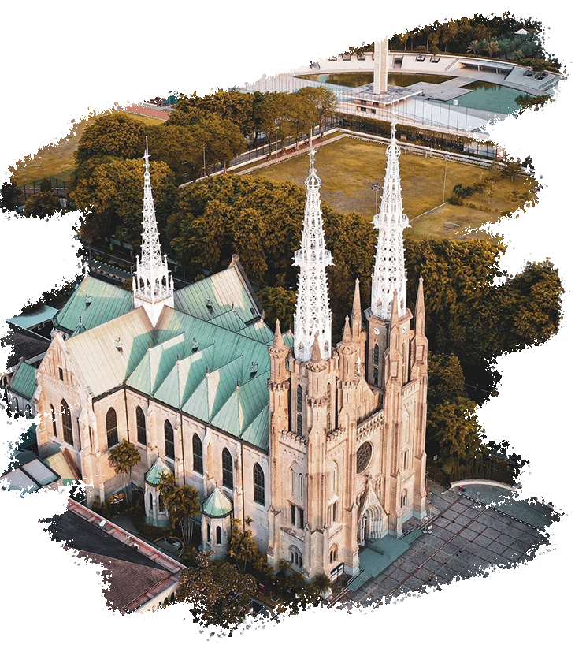
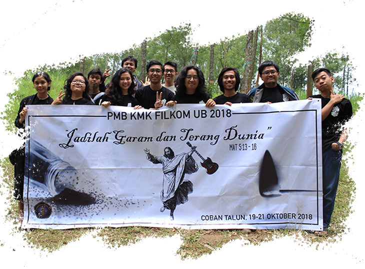

Gereja Katolik Keuskupan Jakarta
Gereja Katedral Jakarta memiliki desain unik yang dibangun dengan arsitektur neo-gotik dari Eropa. Desian Gereja Katedral dapat dilihat dari atas membentuk sebuah salib sebagai lambang Gereja Katolik. Konstruksi bangunan ini dikerjakan oleh seorang tukang batu dari Kwongfu, China.
"Kasihilah Tuhan, Allahmu, dengan segenap hatimu dan dengan segenap jiwamu dan dengan segenap akal budimu."
Matius 22:37
Pemuda Pemudi Gereja
Kehadiran pemuda dan pemudi yang aktif dalam Gereja Katedral Jakarta merupakan suatu harapan bagi gereja dalam upaya mendorong generasi muda untuk menjalani kehidupan beragama yang aktif dan bermakna serta menjadi teladan bagi orang lain dalam mewujudkan toleransi, cinta kasih, dan solidaritas dalam masyarakat.

Kabar Sukacita
"Tidak ada dosa yang tidak dapat diampuni oleh kasih Allah, selagi kita datang dengan hati yang penuh penyesalan dan bertobat."
Santo Fransiskus dari Assisi